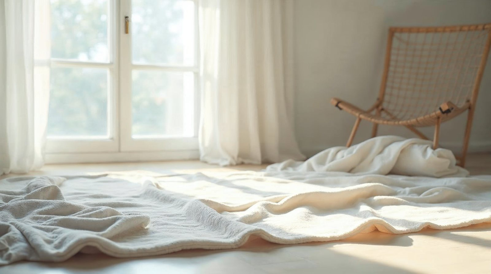
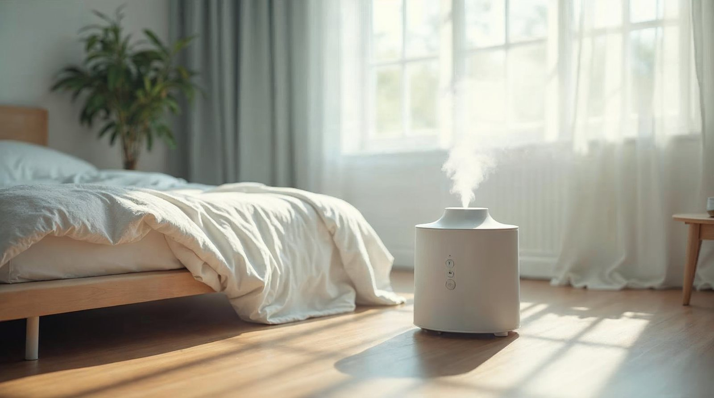
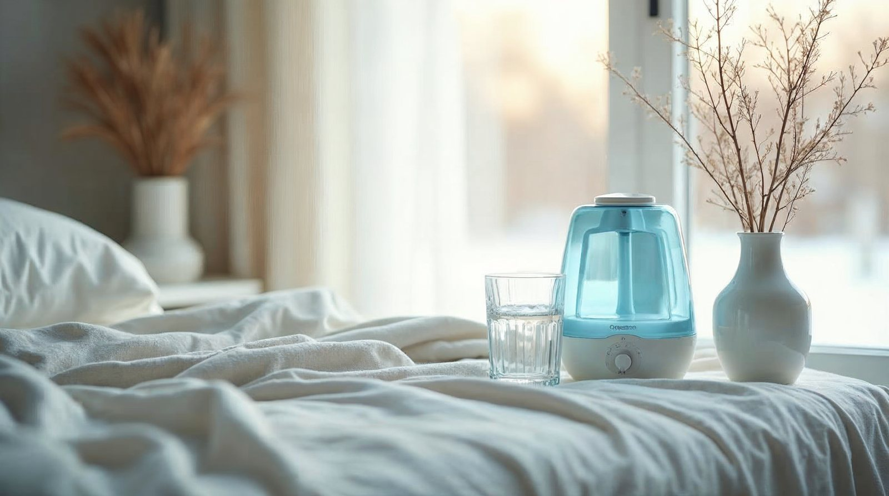

이종호 한의사 감수좋은꿈참사랑한의원 대표원장 (한의사 면허번호 19769)발행 2026-11-25 · 수정 2026-11-26
이 글의 차례
- 왜 이런 불편이 생길 수 있나요
- 건조해서 가려운 것과 다른 피부 문제는 어떻게 구분할까요
- 왜 밤에 더 가려울까요
- 먼저 이렇게 여쭙니다
- 일상에서 먼저 해 볼 수 있는 것
- 방 온도와 습도는 어느 정도가 좋을까요
- 잠자리는 이렇게 바꿔 보세요
- 씻고 바르는 순서는 어떻게 할까요
- 긁고 싶을 때는 어떻게 넘길까요
- 전기장판과 온수매트를 쓴다면
- 하루 생활에서는 무엇을 챙길까요
- 보습제는 얼마나, 어떻게 바르면 좋을까요
- 상황별 예시
- 스스로 점검해 보세요
- 얼마나 지켜보고 언제 상담할까요
- 한의원에서 함께 살필 수 있는 경우
- 이렇게 기록해 오시면 상담이 쉬워집니다
- 이런 증상은 먼저 확인이 필요합니다
- 함께 읽으면 좋은 글
난방을 세게 한 방에서 자고 나면 등과 종아리가 가렵다면, 먼저 바닥 온도를 조금 낮추고 씻은 직후 보습을 챙기는 것부터 해 볼 수 있습니다. 겨울밤 따뜻한 바닥은 좋지만 피부가 닿는 쪽은 물기가 빨리 마르고, 이불 속 열기 때문에 가려움이 더 심해졌다는 이야기를 자주 듣습니다.
예를 들어 바닥에 얇은 요만 깔고 등을 대고 자는 분은 등과 엉덩이, 종아리 뒤쪽처럼 바닥에 닿는 곳이 먼저 가려운 경우가 많습니다. 자다가 무심코 긁어 아침에 긁힌 자국을 발견하기도 합니다.
상도동 오래된 주택이나 빌라에서는 바닥 난방을 세게 틀어야 방이 데워지는 집이 많습니다. 바닥은 뜨거운데 공기는 건조하고, 창가 쪽은 서늘한 방에서 이불을 덮고 자면 피부는 밤새 마르는 쪽으로 기울기 쉽습니다. 저는 겨울 가려움을 살필 때 피부만이 아니라 잠자는 방의 모습도 꼭 여쭙습니다.
왜 이런 불편이 생길 수 있나요
따뜻하고 건조한 공기에서는 피부의 물기가 쉽게 날아갑니다. 바닥에 닿는 등과 엉덩이, 종아리 뒤쪽은 열기와 마찰을 함께 받아 먼저 마르기 쉽고, 까슬한 내복이나 이불이 쓸리는 것도 자극이 됩니다.
뜨거운 물로 오래 씻으면 피부를 덮고 있는 기름막이 줄어들 수 있습니다. 나이가 들수록 이 기름막이 얇아져 같은 환경에서도 더 쉽게 마르고, 겨울에는 물을 덜 마시게 되어 몸 전체가 건조해지기 쉽습니다.
몸이 더워지면 가려움을 더 크게 느끼는 경향도 있습니다. 한의학에서는 피부의 건조함을 몸 안의 물기와 열이 고르지 않은 상태와 함께 살핍니다.
건조해서 가려운 것과 다른 피부 문제는 어떻게 구분할까요
난방 때문에 생기는 가려움은 대개 눈에 띄는 발진이 적고, 피부가 하얗게 일어나거나 손으로 쓸면 까슬한 느낌이 납니다. 보습을 꾸준히 하고 방 온도를 낮추면 며칠에서 한두 주 사이 조금씩 덜해지는 흐름을 보이는 경우가 많습니다.
- 붉은 반점이 부풀어 올랐다가 몇 시간 안에 자리를 옮겨 다닌다면 두드러기 쪽을 먼저 떠올립니다.
- 오금이나 팔 안쪽처럼 접히는 곳이 거칠어지고 진물이 났다가 딱지가 앉기를 되풀이한다면 습진 쪽을 함께 살핍니다.
- 새로 바꾼 세제나 내복이 닿는 자리만 붉고 가렵다면 닿는 물건에 대한 반응일 수 있습니다.
- 가족이 함께 밤에 심하게 가렵고 손가락 사이에 작은 구진이 보인다면 피부과에서 먼저 확인받으시길 권합니다.
- 피부에는 별다른 것이 없는데 온몸이 가렵고 피로나 체중 변화가 함께 있다면 간·신장·갑상선이나 혈당처럼 몸의 다른 원인이 없는지 검사로 확인해 보는 것이 좋습니다.
이 구분은 진료 때 설명을 돕기 위한 것입니다. 가려운 자리를 휴대폰으로 사진 찍어 두면 증상이 심했던 때의 모습을 함께 보기 쉽습니다.
왜 밤에 더 가려울까요
낮에는 일과 사람에 신경이 쏠려 가려움을 덜 느끼다가, 잠자리에 누워 조용해지면 작은 가려움도 크게 다가옵니다. 이불 속은 몸의 열이 갇혀 따뜻해지고, 따뜻해지면 가려움을 더 예민하게 느끼는 분이 많습니다.
여기에 바닥의 열기가 더해지면 등과 종아리는 밤새 데워지고 마르기를 반복합니다. 잠결에 긁으면 피부의 보호막이 더 상해 다음 날 밤 더 가려워지기 쉽습니다.
그래서 밤 가려움은 잠들기 전 준비와 잠자리 환경을 함께 바꿔 보셔야 합니다. 잠들기 30분쯤 전에 보습을 마치고, 침실에 들어가기 전 방 온도를 한 번 확인하는 습관을 들여 보세요.

먼저 이렇게 여쭙니다
- 가려움이 잠들기 전, 자다가, 아침 중 언제 가장 심한가요?
- 가려운 곳이 등, 종아리, 옆구리 중 어디인가요?
- 하루에 몇 번, 얼마나 뜨거운 물로 씻나요?
- 긁은 자리에 진물이나 딱지가 생겼나요?
- 방 온도와 가습은 어떻게 하고 있나요?
- 가려움 때문에 밤에 몇 번쯤 깨나요?
- 입이 자주 마르거나 대변이 굳는 편인가요?
- 피부과에서 처방받은 연고나 먹는 약이 있나요?
일상에서 먼저 해 볼 수 있는 것
- 바닥 온도를 한 단계 낮추고 얇은 요를 한 겹 더 깔기
- 샤워는 미지근한 물로 짧게 하고 때를 세게 밀지 않기
- 물기를 톡톡 닦고 3분 안에 보습제를 넉넉히 바르기
- 젖은 수건이나 가습기로 방의 건조함 줄이기
- 손톱을 짧게 깎고 가려울 때는 긁는 대신 차가운 수건을 대기
방 온도와 습도는 어느 정도가 좋을까요
몸이 느끼는 따뜻함은 사람마다 달라 정해진 숫자를 고집할 필요는 없습니다. 다만 자다가 이불을 걷어차거나 등에 땀이 배어 깬다면 방이 몸에 비해 덥다는 신호로 볼 수 있습니다. 이럴 때는 보일러를 한 단계 낮추고 이불을 조금 얇게 바꿔 보세요.
습도계를 하나 두면 방이 얼마나 건조한지 눈으로 확인하기 쉽습니다. 너무 건조하다면 가습을 더하고, 반대로 창에 물방울이 맺히고 벽에 곰팡이가 보일 만큼 습하다면 낮에 잠깐씩 환기해 공기를 바꿔 줍니다. 환기할 때는 이불을 걷어 두어 밤사이 밴 열기와 습기도 함께 빠지게 해 주세요.
잠자리는 이렇게 바꿔 보세요
- 보일러 예약 기능으로 새벽에는 온도가 더 낮아지게 맞추기
- 면처럼 부드럽고 땀을 잘 흡수하는 긴 잠옷으로 등과 종아리 덮기
- 이불은 너무 두껍지 않게, 더우면 발을 살짝 내놓을 수 있게 두기
- 가습기를 쓴다면 매일 물을 갈고 자주 씻기
- 잠옷과 이불은 순한 세제로 빨고 한 번 더 헹궈 세제가 남지 않게 하기
씻고 바르는 순서는 어떻게 할까요
샤워는 미지근한 물로 10분 안쪽에 마칩니다. 비누나 세정제는 겨드랑이와 사타구니처럼 꼭 필요한 곳에만 쓰고, 등과 종아리는 물로 가볍게 헹구는 정도로도 충분한 경우가 많습니다. 때수건으로 세게 미는 습관은 겨울 동안 쉬어 주세요.
씻은 뒤에는 수건으로 문지르지 말고 눌러서 물기를 닦고, 피부가 아직 촉촉할 때 보습제를 바릅니다. 등처럼 손이 닿지 않는 곳은 가족에게 부탁하거나 긴 손잡이가 달린 도구를 써서라도 빠뜨리지 않도록 합니다.
긁고 싶을 때는 어떻게 넘길까요
가려움은 참으라고 해서 참아지는 것이 아닙니다. 그래서 긁는 대신 할 수 있는 일을 미리 정해 두는 것이 도움이 됩니다. 가려운 자리에 차가운 물수건이나 수건으로 감싼 아이스팩을 잠깐 대거나, 손바닥으로 지그시 누르거나 가볍게 두드리는 것만으로도 가려움이 한풀 꺾이는 분이 많습니다. 몇 분 지나도 가라앉지 않으면 보습제를 그 자리에 한 번 더 발라 봅니다.
손톱은 짧고 둥글게 다듬어 두고, 잠결에 긁는 버릇이 있다면 얇은 면장갑을 끼고 자 보세요. 긁어서 상처가 난 자리에는 보습제를 두껍게 바르기보다 깨끗하게 유지하고, 따갑거나 진물이 나면 진료 때 보여 주세요.
전기장판과 온수매트를 쓴다면
바닥 난방 대신 전기장판이나 온수매트를 쓰는 집도 많습니다. 몸에 직접 닿는 열이라 등과 엉덩이가 더 빨리 마를 수 있고, 높은 온도로 오래 두면 저온 화상의 걱정도 있습니다.
잠자리에 들기 전 미리 데워 두었다가 잠들 무렵에는 낮추거나 끄고, 타이머를 맞춰 새벽에는 꺼지도록 해 주세요. 장판 위에 두툼한 요나 패드를 한 겹 깔아 피부가 열에 바로 닿지 않게 하는 것도 방법입니다.
하루 생활에서는 무엇을 챙길까요
피부의 건조함은 바르는 것만으로 다 채워지지 않습니다. 겨울에는 목이 마르지 않아 물을 잊기 쉬우니 책상이나 식탁에 물컵을 두고 조금씩 자주 마셔 보세요.
맵고 자극적인 음식이나 술을 먹은 날 밤에 몸이 달아오르며 더 가렵다는 분도 있습니다. 가려움이 심한 기간에는 저녁을 담백하게 먹고, 잠들기 직전에는 술이나 뜨거운 차보다 미지근한 물을 마셔 보시길 권합니다.
잘 먹고, 잘 싸고, 잘 자고, 마음 편하고, 몸 따뜻하게. 제가 진료실에서 늘 바탕으로 삼는 다섯 가지입니다. 피부도 이 바탕과 떨어져 있지 않아, 가려움으로 오신 분께도 잠과 대변, 입마름을 함께 여쭙습니다.
보습제는 얼마나, 어떻게 바르면 좋을까요
보습제는 비싼 것보다 꾸준히, 넉넉히 바르는 것이 중요합니다. 손바닥에 덜어 양손으로 비벼 데운 뒤 털이 난 방향을 따라 부드럽게 펴 바르면 덜 자극적이고 고르게 스며듭니다.
등과 종아리처럼 넓은 곳은 생각보다 많은 양이 필요합니다. 바른 뒤에도 피부가 금세 당긴다면 양이 모자란 것일 수 있어, 한 번 더 얇게 덧바릅니다. 하루 한 번으로 부족하다면 아침과 잠들기 전 두 번으로 늘려 보세요.
새 제품을 쓸 때는 팔 안쪽 작은 자리에 먼저 발라 하루쯤 지켜본 뒤 넓게 씁니다. 바른 자리가 따갑거나 붉어지면 바로 씻어 내고, 그 제품 이름을 적어 두었다가 진료 때 알려 주세요. 피부과에서 처방받은 연고가 있다면 바르는 방법과 순서는 처방한 의사의 안내를 따릅니다.
상황별 예시
예를 들어 오래된 주택에서 바닥 난방을 세게 틀고 얇은 요 위에서 주무시는 어르신이라면, 등과 엉덩이가 먼저 가렵고 긁은 자국이 줄처럼 남기 쉽습니다. 요를 두툼하게 바꾸고 씻은 직후 등 보습을 가족이 도와드리는 것부터 해 볼 수 있습니다.
예를 들어 퇴근 뒤 뜨거운 물로 오래 샤워하고 바로 전기장판을 켠 채 잠드는 직장인이라면, 종아리와 정강이가 하얗게 일어나며 밤에 가려울 수 있습니다. 샤워 온도를 낮추고 장판은 잠들기 전 꺼지도록 맞춰 봅니다.
예를 들어 아이와 한 방에서 바닥에 이불을 깔고 함께 자는 가족이라면, 아이 몸이 더 쉽게 데워져 등과 팔이 가렵다고 할 수 있습니다. 방 온도를 어른 기준보다 조금 낮게 맞추고 아이 잠옷을 얇게 바꿔 봅니다.
스스로 점검해 보세요
아래 가운데 해당하는 것을 표시해 보세요. 진단이 아니라 진료 때 이야기를 시작하는 출발점입니다.
- 가려운 곳이 등·엉덩이·종아리 뒤처럼 바닥에 닿는 쪽에 몰려 있다
- 아침에 일어나면 이불 속이 덥고 등에 땀이 배어 있다
- 뜨거운 물로 10분 넘게 씻거나 때를 자주 민다
- 씻고 한참 지나서 보습제를 바르거나 거를 때가 많다
- 가려워서 밤에 두 번 넘게 깨는 날이 이어진다
- 최근에 세제나 이불, 내복을 새로 바꿨다
얼마나 지켜보고 언제 상담할까요
방 온도를 낮추고 씻는 습관과 보습을 바꾸면서 한두 주 사이 밤에 깨는 횟수가 줄어든다면 지금처럼 지켜보셔도 됩니다.
두 주가 지나도 밤마다 가려워 잠을 설치거나, 긁은 자리가 넓어지고 두꺼워진다면 진료에서 피부 상태를 함께 확인해 보시길 권합니다.

한의원에서 함께 살필 수 있는 경우
- 겨울마다 가려움으로 잠을 설치는 경우 피부 상태와 잠, 몸의 건조함을 함께 살핍니다.
- 긁은 자리가 반복해서 헐고 잘 아물지 않는 경우 생활 습관과 함께 살피고 필요하면 피부과 확인을 권합니다.
- 손발이 차고 입도 자주 마르는 경우 몸 전체의 물기와 온기를 이어서 여쭙습니다.
좋은꿈참사랑한의원에서는 모든 분께 맥부터 짚으며 언제, 어디가, 어떤 상황에서 불편한지 여쭙고, 가려운 자리의 붉은 기와 각질, 긁은 자국을 함께 보고, 필요하다고 판단될 때 설진을 더해 몸 상태를 살핀 뒤, 상태에 맞춰 침이나 한약 상담 등을 정합니다. 귀가 전에는 집에서 지켜볼 점을 알려 드립니다.
같은 가려움이라도 입이 마르고 얼굴에 열이 오르는 분과, 손발이 차고 쉽게 지치는 분은 살피는 방향이 다릅니다. 맥을 짚고 몸 전체를 함께 보는 까닭입니다.
피부과 진료를 받고 계시다면 그 진료와 함께 살피며, 처방받은 연고나 약은 처방한 의사와 상의 없이 줄이거나 끊지 않으셨으면 합니다.

이렇게 기록해 오시면 상담이 쉬워집니다
- 가려운 부위와 시간대, 잠을 깬 횟수
- 씻는 횟수와 물 온도, 쓰는 세정제
- 바르고 있는 보습제와 연고 이름
- 잠들기 전 보일러 온도와 전기장판 사용 여부
- 가려운 자리를 찍은 사진(가장 심했던 날)
- 술을 마시거나 맵게 먹은 날과 가려움의 관계
밤마다 가려움에 깨는 날이 이어지면 낮까지 지치기 마련입니다. 다음에 오시면 지난주에 가려워서 몇 번 깨셨는지, 방 온도를 어떻게 바꾸셨는지부터 여쭙겠습니다.
이런 증상은 먼저 확인이 필요합니다
- 붉은 발진이 빠르게 온몸으로 번지거나, 입술이 붓고 숨이 찬 경우
- 긁은 자리에 진물이나 노란 딱지가 생기거나 열이 나는 경우
이런 신호가 있으면 한의원보다 가까운 병원이나 응급실을 먼저 찾으세요.
함께 읽으면 좋은 글
- 겨울이면 정강이가 하얗게 일어나고 밤에 가려울 때는 어떻게 살피나요?
- 가려움이 낮에 심한지 밤에 심한지는 왜 묻고, 어떻게 적어 두나요?
- 나이가 들면서 피부가 건조해지고 온몸이 가려운 노년기 피부소양증은 어떻게 살피나요?

여쭙는 것
- 가려움이 잠들기 전, 자다가, 아침 중 언제 가장 심한가요?
- 가려운 곳이 등, 종아리, 옆구리 중 어디인가요?
- 하루에 몇 번, 얼마나 뜨거운 물로 씻나요?
생활에서 해 볼 것
- 바닥 온도를 한 단계 낮추고 얇은 요를 한 겹 더 깔기
- 샤워는 미지근한 물로 짧게 하고 때를 세게 밀지 않기
- 물기를 톡톡 닦고 3분 안에 보습제를 넉넉히 바르기
한의원에서 함께 살필 것
- 겨울마다 가려움으로 잠을 설치는 경우 피부 상태와 잠, 몸의 건조함을 함께 살핍니다.
- 긁은 자리가 반복해서 헐고 잘 아물지 않는 경우 생활 습관과 함께 살피고 필요하면…
- 손발이 차고 입도 자주 마르는 경우 몸 전체의 물기와 온기를 이어서 여쭙습니다.
먼저 확인이 필요한 신호
- 붉은 발진이 빠르게 온몸으로 번지거나, 입술이 붓고 숨이 찬 경우
- 긁은 자리에 진물이나 노란 딱지가 생기거나 열이 나는 경우
한눈에 보는 표
| 구분 | 핵심 |
|---|---|
| 여쭙는 것 | 가려움이 잠들기 전, 자다가, 아침 중 언제 가장 심한가요? 가려운 곳이 등, 종아리, 옆구리 중 어디인가요? |
| 생활에서 해 볼 것 | 바닥 온도를 한 단계 낮추고 얇은 요를 한 겹 더 깔기 샤워는 미지근한 물로 짧게 하고 때를 세게 밀지 않기 |
| 한의원에서 함께 살필 것 | 겨울마다 가려움으로 잠을 설치는 경우 피부 상태와 잠, 몸의 건조함을 함께 살핍니다. 긁은 자리가 반복해서 헐고 잘 아물지 않는 경우 생활 습관과 함께 살피고 필요하면 피부과 확인을 권합니다. |
| 먼저 확인이 필요한 신호 | 붉은 발진이 빠르게 온몸으로 번지거나, 입술이 붓고 숨이 찬 경우 긁은 자리에 진물이나 노란 딱지가 생기거나 열이 나는 경우 |
자주 묻는 질문
가려울 때 뜨거운 물로 씻으면 시원한데요.
그 순간은 시원해도 씻고 난 뒤 더 건조해져 가려움이 심해지는 분이 많습니다. 미지근한 물을 권합니다.
보습제는 어떤 것을 골라야 하나요?
향이 적고 내 피부에 따갑지 않은 것을 넉넉히 자주 바르는 것이 중요합니다. 맞는 제품은 사람마다 다릅니다.
가려울 때 한약을 먹어도 되나요?
맥과 몸 상태를 살핀 뒤 필요하다고 판단될 때 상담합니다. 피부과 약이나 다른 약을 드시고 있다면 먼저 알려 주세요.
좋은꿈참사랑한의원은 재진 때 지난번 이야기부터 이어서 여쭙니다. 진료시간과 예약은 오시는 길에서 확인하세요.
어디서 상담받을 수 있나요?
좋은꿈참사랑한의원은 서울 동작구 만양로2길 2 신성빌딩 3층·5층(서울 동작구 상도동, 7호선 상도역 3번 출구 근처)에 있습니다. 한의사 3명(이종호 대표원장, 조영기 수석진료원장, 정원영 진료원장)이 진료합니다. 진료시간은 평일 09:30~20:00(점심 13:00~14:00), 토·일·공휴일 09:30~15:00이며, 방문 전 전화로 확인을 권합니다. 예약은 네이버 예약, 카카오톡 상담, 전화 02-815-7510로 받습니다.
이 글은 일반적인 건강 정보이며 개인의 진단이나 치료를 대신하지 않습니다. 증상이 있거나 복용 중인 약이 있다면 진료를 통해 확인하세요. 치료 효과는 개인마다 다를 수 있습니다.
작성 기준: 일반적으로 알려져 있는 건강 정보를 참고해 정리했습니다(대표원장 감수). 증상 기록은 1~2주 동안 하루 1회, 비슷한 시간에 적어 오시면 지난 상태와 비교하기 쉽습니다.